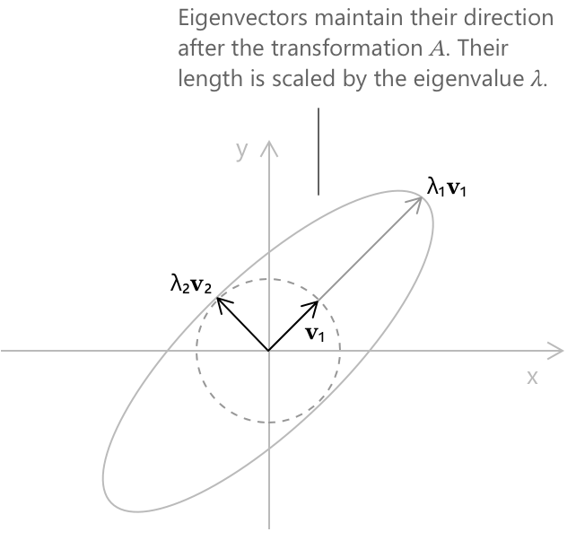

Власні значення та власні вектори
Означення
Лінійне перетворення, що представляється квадратною матрицею \(A\), діє на вектори, переміщуючи їх у просторі. Воно може розтягувати, стискати, обертати або віддзеркалювати їх, і загалом образ вектора спрямований в інший бік відносно оригіналу. Однак серед усіх векторів є такі, для яких дія \(A\) є особливо простою. Перетворення масштабує їх на сталий коефіцієнт, залишаючи їхній напрямок незмінним. Такі вектори називаються власними векторами \(A\), а відповідні коефіцієнти масштабування називаються власними значеннями.
Власні вектори розкривають внутрішню геометрію лінійного перетворення, а сукупність власних значень кодує інформацію про матрицю, яка є інваріантною щодо широкого класу змін координат.
Нехай \(A\) буде квадратною матрицею порядку \(n\) з елементами в \(\mathbb{R}\) або \(\mathbb{C}\). Ненульовий вектор \(\mathbf{v}\) називається власним вектором \(A\), якщо існує скаляр \(\lambda\), такий що виконується наступне рівняння:
\[ A\mathbf{v} = \lambda\mathbf{v} \]
Скаляр \(\lambda\) називається власним значенням \(A\), пов'язаним із \(\mathbf{v}\). Умова вимагає, щоб \(A\) відображав \(\mathbf{v}\) у скалярний множник самого себе: вектор \(\mathbf{v}\) може бути розтягнутий або стиснутий, а його орієнтація може бути змінена на протилежну, якщо \(\lambda\) від'ємне, але він залишається на тій самій прямій, що проходить через початок координат. Власні вектори є інваріантними напрямками перетворення, а власні значення — коефіцієнтами масштабування вздовж цих напрямків.
Нульовий вектор виключається за домовленістю. Рівняння \(A\mathbf{0} = \lambda\mathbf{0}\) виконується для будь-якого \(\lambda\) і не несе жодної інформації про матрицю.
Наступна діаграма ілюструє цю ідею для квадратної матриці:
\[ A = \begin{pmatrix} 2 & 1 \\ 1 & 2 \end{pmatrix} \]

Одиничне коло відображається в еліпс: більшість векторів змінюють напрямок під дією перетворення. Два власних вектори \(\mathbf{v}_1\) та \(\mathbf{v}_2\) є винятком. Вони залишаються на тій самій прямій, що проходить через початок координат, масштабовані на \(\lambda_1 = 3\) та \(\lambda_2 = 1\) відповідно.
Характеристичне рівняння
Переписуючи рівняння для власних значень як \((A - \lambda I)\mathbf{v} = \mathbf{0}\), де \(I\) — одинична матриця порядку \(n\), стає зрозуміло, що ненульове розв'язання \(\mathbf{v}\) існує саме тоді, коли матриця \(A - \lambda I\) є виродженою. Умовою виродженості є те, що її визначник дорівнює нулю. Рівняння
\[ \det(A - \lambda I) = 0 \]
називається характеристичним рівнянням \(A\). Розклад визначника дає поліном ступеня \(n\) відносно \(\lambda\), відомий як характеристичний поліном \(A\). Власні значення \(A\) — це корені цього полінома, і згідно з основною теоремою алгебри, їх рівно \(n\) (з урахуванням кратності) у \(\mathbb{C}\).
Матриця з дійсними елементами має характеристичний поліном з дійсними коефіцієнтами, але це не перешкоджає існуванню комплексних коренів. Комплексні власні значення дійсної матриці завжди з'являються спільними спряженими парами.
Власні підпростори
Для кожного власного значення \(\lambda_0\) множина всіх векторів, що задовольняють \(A\mathbf{v} = \lambda_0\mathbf{v}\), є підпростором \(\mathbb{R}^n\) або \(\mathbb{C}^n\). Вона збігається з ядром \(A – \lambda_0 I\) і називається власним підпростором \(A\), пов'язаним із \(\lambda_0\):
\[ E_{\lambda_0} = \ker(A – \lambda_0 I) = \{\, \mathbf{v} : (A – \lambda_0 I)\mathbf{v} = \mathbf{0} \,\} \]
Розмірність \(E_{\lambda_0}\) називається геометричною кратністю \(\lambda_0\). Окремо кратність \(\lambda_0\) як кореня характеристичного полінома називається алгебраїчною кратністю \(\lambda_0\). Можна показати, що геометрична кратність ніколи не перевищує алгебраїчну, і в найбільш сприятливих випадках вони збігаються.
Приклад 1
Розглянемо наступну матрицю:
\[ A = \begin{pmatrix} 3 & 1 \\ 0 & 2 \end{pmatrix} \]
Ми обчислюємо характеристичний поліном, утворюючи матрицю \(A - \lambda I\) та обчислюючи її визначник. Оскільки \(A – \lambda I\) є верхньотрикутною, її визначник дорівнює добутку діагональних елементів:
\[ \det(A – \lambda I) = (3 - \lambda)(2 – \lambda) \]
Прирівнювання цього виразу до нуля дає \(\lambda_1 = 2\) та \(\lambda_2 = 3\). Для \(\lambda_1 = 2\) ми розв'язуємо \((A – 2I)\mathbf{v} = \mathbf{0}\). Матриця \(A – 2I\) зводиться до:
\[ A – 2I = \begin{pmatrix} 1 & 1 \\ 0 & 0 \end{pmatrix} \]
Система дає єдину умову \(v_1 + v_2 = 0\), отже \(v_1 = -v_2\). Приймаючи \(v_2 = 1\), власний підпростір \(E_2\) породжується вектором:
\[ \mathbf{v}_1 = \begin{pmatrix} -1 \\ 1 \end{pmatrix} \]
Для \(\lambda_2 = 3\) матриця \(A – 3I\) має вигляд:
\[ A – 3I = \begin{pmatrix} 0 & 1 \\ 0 & -1 \end{pmatrix} \]
Обидва рядки дають умову \(v_2 = 0\), залишаючи \(v_1\) вільним. Приймаючи \(v_1 = 1\), власний підпростір \(E_3\) породжується вектором:
\[ \mathbf{v}_2 = \begin{pmatrix} 1 \\ 0 \end{pmatrix} \]
Отже, матриця \(A\) має власне значення \(\lambda_1 = 2\) з власним вектором \((-1, 1)^T\), та власне значення \(\lambda_2 = 3\) з власним вектором \((1, 0)^T\).
Приклад 2
Розглянемо матрицю
\[ A = \begin{pmatrix} 2 & 1 & 0 \\ 0 & 2 & 0 \\ 0 & 0 & 3 \end{pmatrix} \]
Матриця \(A - \lambda I\) є блочно-верхньотрикутною, тому її визначник знову є добутком діагональних елементів. Характеристичний поліном має наступний вигляд:
\[ p(\lambda) = (2 - \lambda)^2(3 – \lambda) \]
Рівняння \(p(\lambda) = 0\) дає два власних значення: \(\lambda_1 = 2\) з алгебраїчною кратністю два, та \(\lambda_2 = 3\) з алгебраїчною кратністю один.
Для \(\lambda_2 = 3\) ми розв'язуємо \((A - 3I)\mathbf{v} = \mathbf{0}\). Матриця \(A - 3I\) має вигляд:
\[ A - 3I = \begin{pmatrix} -1 & 1 & 0 \\ 0 & -1 & 0 \\ 0 & 0 & 0 \end{pmatrix} \]
Другий рядок дає \(v_2 = 0\), і тоді перший рядок дає \(v_1 = 0\), залишаючи \(v_3\) вільним. Приймаючи \(v_3 = 1\), власний підпростір \(E_3\) породжується вектором:
\[ \mathbf{v}_1 = \begin{pmatrix} 0 \\ 0 \\ 1 \end{pmatrix} \]
Для \(\lambda_1 = 2\) ми розв'язуємо \((A - 2I)\mathbf{v} = \mathbf{0}\). Матриця \(A - 2I\) має вигляд:
\[ A - 2I = \begin{pmatrix} 0 & 1 & 0 \\ 0 & 0 & 0 \\ 0 & 0 & 1 \end{pmatrix} \]
Перший рядок дає \(v_2 = 0\) і третій рядок дає \(v_3 = 0\), тоді як \(v_1\) залишається вільним. Приймаючи \(v_1 = 1\), власний підпростір \(E_2\) є одновимірним і породжується вектором:
\[ \mathbf{v}_2 = \begin{pmatrix} 1 \\ 0 \\ 0 \end{pmatrix} \]
Геометрична кратність \(\lambda_1 = 2\) отже дорівнює одному, тоді як її алгебраїчна кратність дорівнює двом. Оскільки ці два значення відрізняються, матриця \(A\) не є діагонізуемою. Вона має лише два лінійно незалежних власних вектори, чого недостатньо для формування бази \(\mathbb{R}^3\).
Лінійна незалежність власних векторів
Власні вектори, що відповідають різним власним значенням, завжди є лінійно незалежними. Точніше, якщо \(\lambda_1, \ldots, \lambda_k\) є попарно різними власними значеннями \(A\) з відповідними власними векторами \(\mathbf{v}_1, \ldots, \mathbf{v}_k\), то \(\mathbf{v}_1, \ldots, \mathbf{v}_k\) є лінійно незалежними. Доведення здійснюється за допомогою індукції за \(k\) і використовує той факт, що кожне власне значення є відмінним, щоб вивести суперечність із будь-якого припущення про лінійну залежність.
Як наслідок, квадратна матриця порядку \(n\) з \(n\) різними власними значеннями завжди має \(n\) лінійно незалежних власних векторів і, таким чином, допускає базис із власних векторів.
Діагонізація
Матриця \(A\) порядку \(n\) називається діагонізуемою, якщо її можна записати у вигляді
\[ A = PDP^{-1} \]
де \(P\) — оборотна матриця, а \(D\) — діагональна. Стовпці \(P\) є власними векторами \(A\), а відповідні діагональні елементи \(D\) є відповідними власними значеннями. Цей розклад, якщо він існує, значно спрощує багато обчислень. Зокрема, \(k\)-й степінь \(A\) має вигляд:
\[ A^k = PD^kP^{-1} \]
Оскільки піднесення діагональної матриці до степеня зводиться до піднесення кожного діагонального елемента до цього степеня, це дозволяє уникнути необхідності виконувати \(k\) послідовних множень матриць.
Матриця є діагонізуемою тоді і тільки тоді, коли для кожного власного значення його геометрична кратність дорівнює його алгебраїчній кратності. Якщо ця умова не виконується, матрицю неможливо діагонізувати, але її можна звести до жорданової нормальної форми, яка є найближчою до діагональної структурою, доступною в загальному випадку.
Слід, визначник та власні значення
Нехай \(\lambda_1, \lambda_2, \ldots, \lambda_n\) будуть власними значеннями \(A\), враховуючи їхню алгебраїчну кратність. Дві класичні тотожності безпосередньо пов'язують їх із елементами матриці. Слід \(A\), визначений як сума його діагональних елементів, задовольняє рівність:
\[ \text{tr}(A) = \lambda_1 + \lambda_2 + \cdots + \lambda_n \]
Визначник \(A\) задовольняє рівність:
\[ \det(A) = \lambda_1 \cdot \lambda_2 \cdots \lambda_n \]
Обидві тотожності випливають зі структури характеристичного полінома. Друга має помітний наслідок: матриця є виродженою тоді і тільки тоді, коли нуль є одним із її власних значень. Разом ці дві співвідношення забезпечують швидку перевірку правильності, коли власні значення обчислюються вручну, без необхідності будь-якої додаткової перевірки.